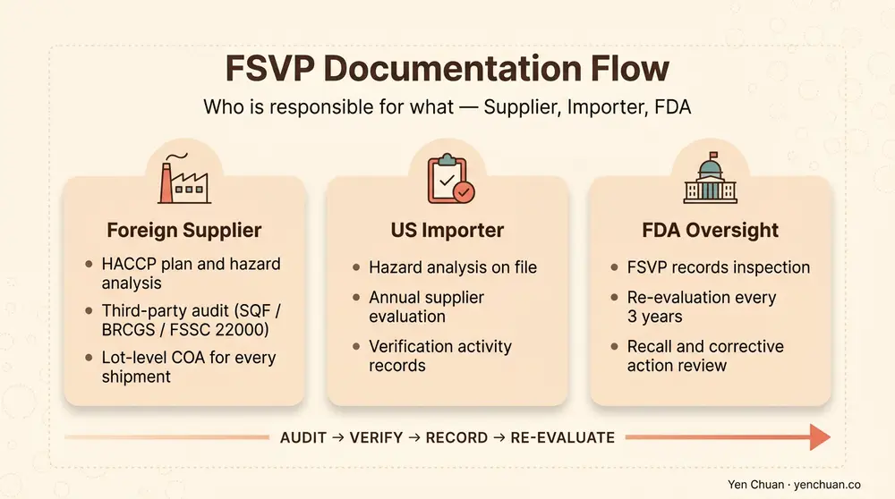
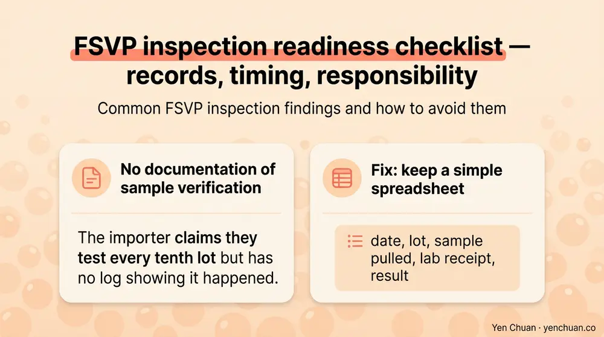

Articles / Business & sourcing
FSVP Compliance for Bubble Tea Importers
2026-02-25 · Industry Trends, Sourcing

If you import bubble tea ingredients into the United States, the FDA considers you a "Foreign Supplier Verification Program" importer — whether or not you know it. FSVP is not a customs form. It is a documentation regime that makes the US importer personally responsible for proving every lot of food they bring in was produced to a safety standard equivalent to what US domestic manufacturers must meet. Penalties for missing records run from detention of goods at the port to civil fines and, in serious cases, criminal referral. This guide walks a B2B importer through what documents to keep on file, which ingredients carry the highest scrutiny, and how to work with a Taiwan supplier to generate FSVP-compliant records from the first purchase order.
Who FSVP applies to and why it exists
FSVP was created under the FDA Food Safety Modernization Act (FSMA) in 2017. Before FSMA, food safety enforcement was reactive — the FDA investigated outbreaks after people got sick. FSVP shifts it upstream: the US importer must verify, in advance, that every foreign supplier has hazard controls in place that are equivalent to what US FDA-registered facilities must have.
If your company is listed as the Importer of Record (IOR) on the CBP 3461 entry form for food destined for US consumption, you are the FSVP importer. That applies even if you are a distributor who resells to a bubble tea chain, an ingredient broker who consolidates containers, or a chain operator importing under your own account. The only exceptions are for items regulated by USDA (meat, poultry, egg products) and a handful of shelf-stable acidified and low-acid canned foods under separate FDA programs.
The penalty structure matters. FDA inspectors conduct unannounced FSVP audits at importer offices — not factories — and ask to see records on the spot. A missing FSVP file for a specific shipment can lead to refusal of admission (goods held at the port) or an import alert that flags every future shipment from that supplier for DWPE (detention without physical examination). For a bubble tea distributor moving 5-10 containers per month, one alert can freeze weeks of inventory.
The five documents every FSVP file must contain
Every shipment of every SKU from every foreign supplier needs a self-contained file. FDA inspectors expect to pull up a binder or a folder on demand for any lot they pick. A compliant file contains five categories of record.
Hazard analysis. A written document identifying known or reasonably foreseeable hazards for the specific food — biological, chemical, physical, and economic (food fraud). For tapioca pearls, that means confirmed hazards like aflatoxin in cassava, glass fragments from processing, and sulfite residues. For non-dairy creamer, it means oxidized fats, allergen cross-contact, and solvent residues from hexane-extracted oils.
Evaluation of the food and supplier. A written determination that the foreign supplier's food safety system adequately controls those hazards. This usually cites a third-party audit (SGS, Bureau Veritas, SQF, BRCGS, FSSC 22000), a recent FDA inspection, or the supplier's own HACCP plan reviewed by your QA team.
Supplier verification activities. The procedure you will use to verify ongoing compliance — typically an annual audit, every-lot COA review, or periodic sampling and testing. For high-risk categories, annual on-site audit is the expected baseline.
Corrective action records. If any verification activity flags a problem, you document what happened, what you did about it, and whether the supplier returned to compliance.
Re-evaluation records. Every three years minimum, you re-evaluate the supplier. New products, new facilities, or a recall trigger earlier re-evaluation.

Which bubble tea ingredients are high-risk and which are low-risk
The FDA categorizes imported foods by a risk matrix based on ingredient type, processing method, and population served. Bubble tea ingredients fall across the spectrum.
Higher-risk categories get more frequent verification and stricter documentation:
- Dairy-based powders (milk powder, whey, condensed milk products) — pathogen risk, allergen declaration, lot-level testing expected.
- Non-dairy creamer — oxidized fat rancidity, hexane residue from oil extraction, palm oil sourcing disclosure.
- Fresh fruit purees and concentrates — microbial risk, pesticide MRLs, acidified-food rules if pH is between 4.0 and 4.6.
- Nut-containing syrups or toppings — allergen management, aflatoxin testing.
Lower-risk categories still need full FSVP files but get lighter verification:
- Dried tapioca pearls — shelf-stable, aw below 0.6, low pathogen risk but still need aflatoxin screens.
- Dried tea leaves — pesticide residue is the main hazard; microbial is minimal.
- Sugar-based syrups (high-fructose, brown sugar) — pathogen-suppressing aw, very low hazard profile.
High-risk SKUs usually need an annual on-site audit of the foreign supplier. Lower-risk SKUs can rely on every-lot COA review plus a desk audit every 3 years. Mixing these tiers in one container is fine — the documentation just needs to reflect the correct verification activity per SKU.
Our nutrition labeling guide for the US market covers the retail-facing disclosure side, which pairs with FSVP for finished-product importers.
What to request from your Taiwan supplier up front
The most common FSVP failure is not a bad supplier — it is an importer who never asked for the right documents during onboarding. A Taiwan ingredient manufacturer with chain-account experience already maintains most of these records and can send them within one business day. Build the request into your sourcing checklist.
| Document | Purpose | How Often |
|---|---|---|
| FDA Food Facility Registration number | Confirms the supplier is lawfully registered to export to the US | Once (verify valid) |
| Facility audit report (SGS, BV, SQF, FSSC 22000) | Supports hazard control determination | Annual |
| HACCP / food safety plan summary | Shows the supplier has identified hazards and control points | At onboarding, update when facility changes |
| Certificate of Analysis (COA) | Lot-specific microbial, chemical, and physical test results | Every lot |
| Allergen statement | Declares allergens present and cross-contact risk | Per SKU |
| Pesticide residue test | For tea leaves and fresh-ingredient categories | Every lot or quarterly |
| Letter of Guarantee | Supplier's written commitment to US regulatory compliance | Annual |
The FDA Food Facility Registration number is the foundation document. Every foreign food facility shipping to the US must renew it every even-numbered year. You can verify status through the FDA's Registration of Food Facilities portal. An expired or suspended registration means every shipment from that facility will be refused at the port.
Common FSVP inspection findings and how to avoid them
FDA FSVP inspections have been running since 2017, and the common finding patterns are predictable. The FDA publishes annual observation summaries that show the top recurring failures.
Missing hazard analysis. The importer jumped straight to "they're ISO-certified, we're fine" without documenting the specific hazards for the specific food. Fix: write one single-page hazard analysis per SKU category, not per lot.
Generic supplier evaluation. The importer referenced an audit report but did not explain how the audit addresses the specific hazards. Fix: add a one-paragraph evaluation that ties each identified hazard to a specific audit control point.
No re-evaluation. Three years pass, the supplier is still approved, but no re-evaluation record exists. Fix: calendar the re-evaluation the day you onboard, not three years later.
English-only records unavailable. FSVP records must be in English and available to the inspector within 24 hours. Fix: translate critical supplier documents at onboarding, not during the inspection.
No documentation of sample verification. The importer claims they test every tenth lot but has no log showing it happened. Fix: keep a simple spreadsheet — date, lot, sample pulled, lab receipt, result.

Building FSVP into your supplier onboarding workflow
The practical way to stay compliant is to treat FSVP as part of sourcing, not as a separate compliance exercise. Before your first purchase order, request the registration number, audit report, food safety plan summary, and letter of guarantee. Write the one-page hazard analysis and supplier evaluation using those documents. Set the verification cadence — annual audit for high-risk, every-lot COA review for lower-risk. Put the next re-evaluation date on a calendar. Keep everything in a single folder per supplier, per SKU, organized by shipment.
For buyers sourcing from Taiwan specifically, most established manufacturers already hold multi-market compliance files covering US, EU, Japan, and halal/kosher. Our Taiwan vs China vs Southeast Asia sourcing comparison covers origin-level compliance differences buyers should weigh at supplier selection. When US market access is a business priority, sourcing from a supplier that can produce FSVP documentation on the first request is a material risk reduction.
Authority Citations
- FDA FSVP Final Rule
- FDA Food Facility Registration
- FDA Import Alerts — Detention Without Physical Examination
- CBP Importer of Record Rules
- Grand View Research — Bubble Tea Market Report
About Yen Chuan
Yen Chuan has been at the heart of Taiwan's bubble tea industry for over 20 years, supplying premium powders, syrups, tapioca pearls, and tea leaves to thousands of boba shops worldwide. With an in-house R&D lab and a commitment to quality ingredients, Yen Chuan is more than a supplier — we're your partner in the boba business. We maintain a standing US compliance pack — FDA registration, third-party audits, HACCP, and letter of guarantee — available to any US importer at the first purchase order.
Ready to onboard a US-compliant supplier?
Need a Taiwan supplier who can deliver a complete FSVP document pack on the first order? Browse our catalog or get in touch with our team — we ship worldwide from Taiwan and provide the full compliance file with every new account.
Frequently Asked Questions
Q: Who is responsible for FSVP compliance — supplier or importer? A: The US Importer of Record is legally responsible under FSMA. The foreign supplier provides the source documents, but the importer must maintain the written hazard analysis, supplier evaluation, verification records, and re-evaluation log in English and available within 24 hours of an FDA request.
Q: Do I need FSVP for every imported bubble tea ingredient? A: Yes, with few exceptions. FSVP applies to virtually all food for human consumption imported into the US. Exceptions are narrow — USDA-regulated items, certain low-acid and acidified canned foods under separate FDA programs, and foods for research or personal use under small limits.
Q: How often does FDA actually inspect FSVP records? A: FDA has been increasing FSVP inspections since 2017 and targeting mid-size importers with multiple foreign suppliers. Many importers get inspected within 3-5 years of their first shipment. An import alert or consumer complaint accelerates the timeline.
Q: What happens if my FSVP file is incomplete at inspection? A: The FDA issues a Form 483 listing observations. Minor gaps get a voluntary corrective action letter. Significant gaps can trigger an import alert with DWPE, meaning every future shipment from that supplier is held at the port for inspection. Serious failures lead to civil fines or criminal referral.
Q: Can a third-party consultant manage my FSVP files? A: Yes. You can designate a qualified individual to perform hazard analysis and supplier evaluations. The importer still holds legal responsibility, but many mid-size importers use a regulatory consultant to maintain the file system and prepare for inspections.